IdentiDeform contact review (round 4: optimized setups)
Current versions of all simulation setups (V5b): 36 validation samples, two cycles of all six actions, three camera views per clip, with the contact force exported from the simulation shown under each clip. Then the force-controlled press next to the speed-controlled press for the same samples. Object screening · round 3 · round 2 · round 1
- Shear, stretch and bend are now gripper-held actions under gravity 2: a firm two-jaw grip (outer 25% of the object, jaws close 30% of the local thickness), the support is removed at 0.75 s, and the object hangs, sags as a cantilever, or swings after a sideways step. In a sensitivity probe (same sample with E/ρ ×4) the video changes 0.18–0.23 (mask 1−IoU) instead of 0.02–0.05 for the previous supported, displacement-controlled versions.
- Press and press–hold–release: one-sided rigid plate, support bed shaped to the underside (overhang supports removed once the plate reaches them), g = 2. Drop: g = 2 from 0.25.
- Parameter ranges (log10, specific units): E/ρ jelly 3.0–5.5, plasticine 3.0–4.5, metal 4.5–6.0; σy/ρ plasticine 2.5–4.0, metal 3.0–4.5. Screened objects only.
- Contact forces: every gripper jaw / plate records the force it applies to the object (10 ms bins) in
contact_forces.npz; the plot shows the total. - Status: the paper's main line stays on V2 (this setup's prior is about level with knowing the true class); these setups are used for a supplementary analysis of how the loading protocol decides identifiability, and the force subset for the force + vision test.
Press
Rigid one-sided plate pushes down 70% of the height over 3 s, then lifts back over 1 s; support bed shaped to the underside; g = 2. Plot: the plate force on the object.
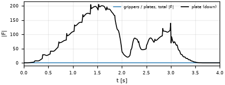
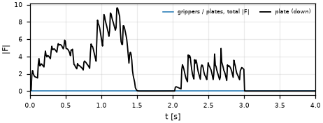
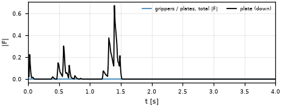
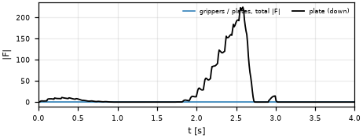
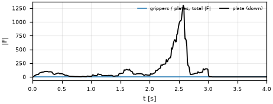
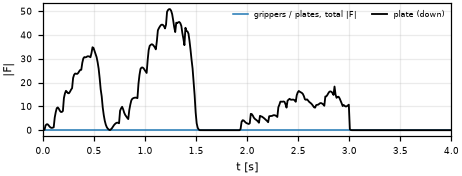
Press–hold–release
Same plate: 30% in 0.5 s, hold to 1.0 s, lift back over 0.5 s, then free until 4 s; g = 2.
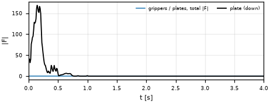
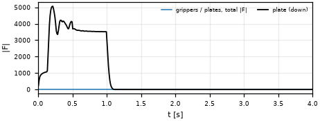
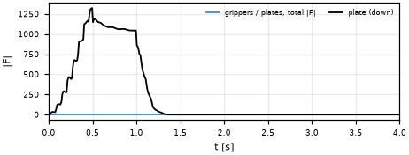
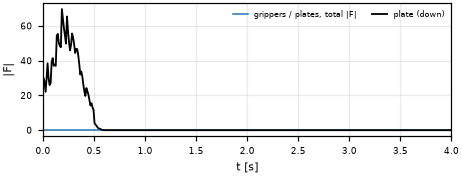
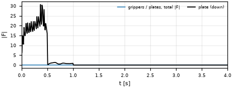
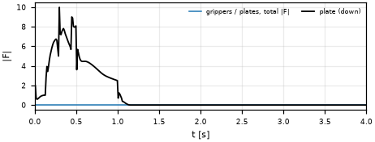
Shear → shake (held)
Gripper holds one end (outer 25%, closes 30% of the local thickness); support removed at 0.75 s; at 1.0 s the gripper steps sideways and stops, so the free end swings; g = 2. Plot: total gripper force.
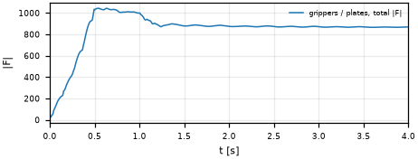
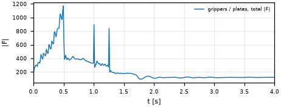
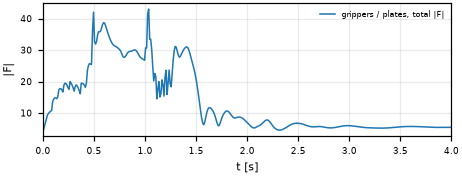
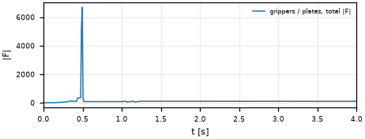
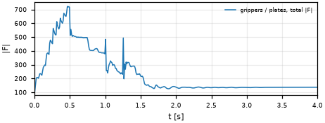
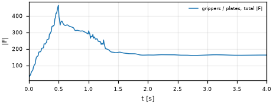
Stretch → hang (held)
Gripper holds the top 25%; support removed at 0.75 s, gripper lifts by 6% of the height and holds, so the object hangs and stretches under its own weight; g = 2.
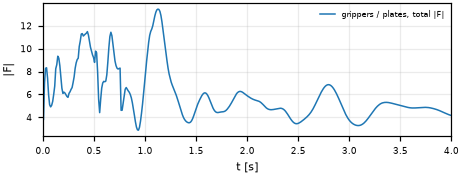
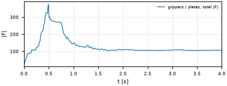
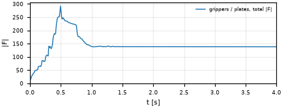
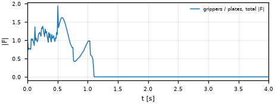
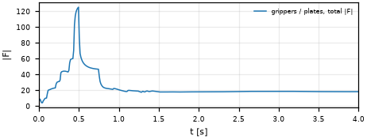
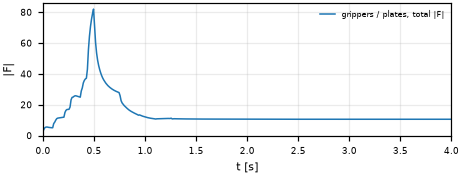
Bend → cantilever (held)
Gripper holds one end; support removed at 0.75 s, so the free part sags as a cantilever and oscillates; g = 2.
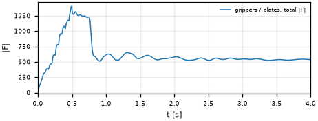
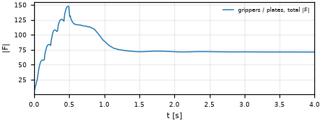
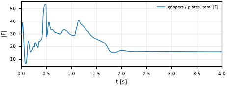
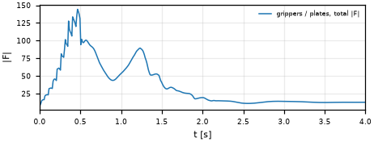
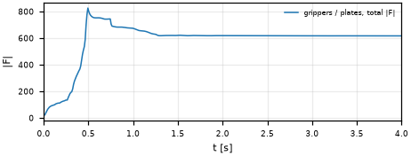
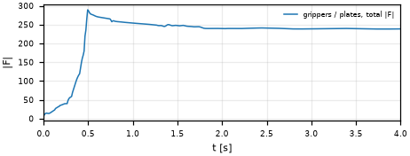
Drop
Free fall from 0.25 above the floor under g = 2.


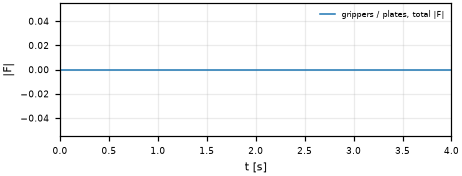
Fixed-force press vs speed-controlled press
Same samples (objects, parameters, cameras). Left: plate moves at a fixed speed. Right: plate is force-controlled (admittance control towards F = 30), so stiff objects stop early and soft ones are pressed deeper. Bottom: plate force; for the fixed-force press the measured reaction R (dots) and the target (dashed). The controller tracks the target but oscillates around it (about 20–50).
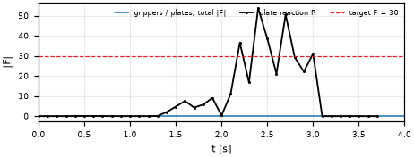
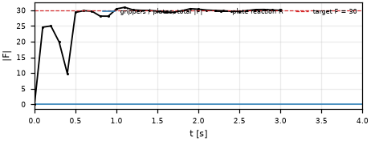
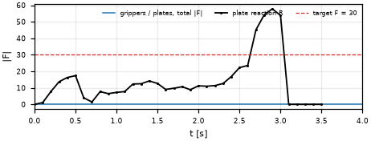

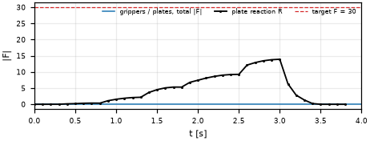

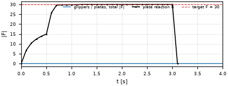

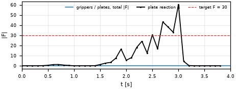

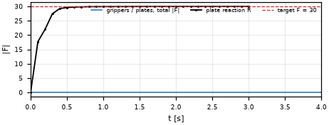

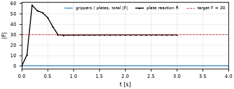

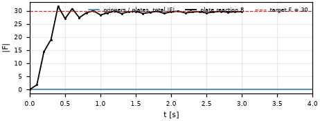

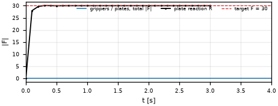

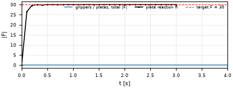

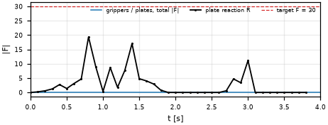